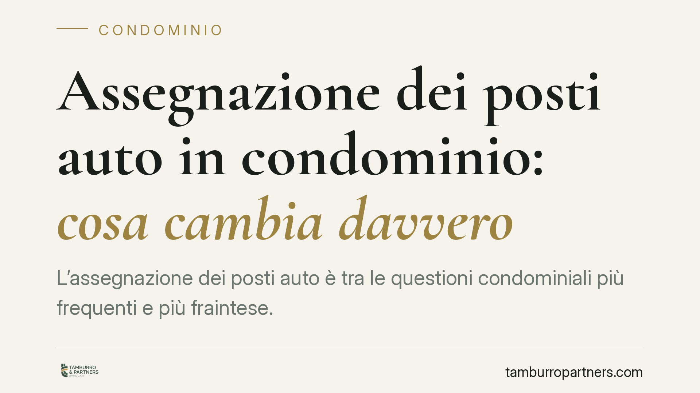

Assegnazione dei posti auto in condominio: cosa cambia davvero
L'assegnazione dei posti auto è tra le questioni condominiali più frequenti e più fraintese. Tracciare righe a terra o attribuire uno stallo a ciascun condomino non modifica la natura comune del cortile né crea diritti di proprietà esclusivi. La distinzione ha effetti concreti su delibere, quorum e futuri contenziosi. Vediamo cosa dice la legge e come muoversi.

Il nodo: uso comune, non proprietà
Il cortile e le aree di sosta condominiali sono beni comuni. Assegnare un posto auto a ciascun condomino significa regolare l'uso di quel bene, non attribuirne la proprietà esclusiva.
La distinzione è tutt'altro che formale. Chi riceve uno stallo delimitato da segnaletica orizzontale continua a essere comproprietario dell'intera area comune: la riga a terra ha valore organizzativo, non traslativo. In altre parole, delimitare visivamente lo spazio non equivale a cederne la titolarità.
Inquadramento normativo
Il riferimento è l'art. 1102 del codice civile, che disciplina l'uso della cosa comune. La norma consente a ciascun partecipante di servirsi del bene comune, a due condizioni: non alterarne la destinazione e non impedire agli altri comproprietari di farne pari uso.
L'assegnazione turnaria o fissa dei posti auto rientra proprio in questo schema. L'assemblea può disciplinare il godimento dell'area per garantire a tutti un uso ordinato e paritario, ma non può disporre del bene come se lo stesse dividendo in proprietà.
La Cassazione Civile ha ripetutamente chiarito che la mera delimitazione di stalli e l'assegnazione degli spazi non trasformano il bene comune in una somma di proprietà individuali. Per operare una vera divisione giuridica del cortile — cioè per attribuire porzioni in proprietà esclusiva — serve il consenso unanime di tutti i condomini, perché si incide sul diritto di comproprietà.
Implicazioni pratiche
Da qui discendono conseguenze operative importanti.
Una delibera che si limita a regolare l'uso dei posti auto (assegnazione a rotazione, criteri di attribuzione, orari, doppie file) è validamente adottata con le maggioranze ordinarie previste per la gestione dei beni comuni. Serve semplicemente a evitare conflitti e a distribuire equamente lo spazio.
Diversa è l'ipotesi in cui la delibera pretenda di attribuire in via permanente e definitiva un posto a un condomino, sottraendolo all'uso degli altri. In questo caso si scivola dall'uso alla divisione, e senza il consenso di tutti la delibera è esposta a impugnazione.
Attenzione anche ai casi in cui i posti disponibili siano meno dei condomini interessati. Il criterio di assegnazione deve rispettare la parità di godimento: la soluzione più coerente con l'art. 1102 c.c. è, di norma, il sistema turnario, che consente a ciascuno di usufruire dello spazio in modo alternato.
Infine, un errore ricorrente: pensare che l'uso prolungato di un determinato stallo consolidi un diritto. L'uso di fatto, per quanto continuato, non attribuisce di per sé la proprietà esclusiva dell'area comune.
Cosa fare in concreto
- Verificate il titolo prima di deliberare. Controllate regolamento condominiale e atti di provenienza: se prevedono già una destinazione o un'assegnazione, la delibera deve rispettarla.
- Distinguete l'oggetto della delibera. Se volete solo regolare l'uso, adottate criteri chiari (turnazione, sorteggio, dimensioni degli stalli) con le maggioranze ordinarie; non introducete formule che parlino di "assegnazione definitiva" o "in proprietà".
- Chiedete l'unanimità solo per la divisione vera. Se l'obiettivo è attribuire porzioni in proprietà esclusiva, mettete a verbale il consenso di tutti i condomini e valutate un atto notarile.
- Formalizzate i criteri per iscritto. Fate redigere all'amministratore un regolamento d'uso dei posti auto, allegato al verbale, per prevenire contestazioni future.
- Conservate la documentazione. Verbali, planimetrie e criteri di assegnazione vanno archiviati: sono la prima difesa in caso di contenzioso.
La gestione dei posti auto è un banco di prova della corretta amministrazione condominiale. Confondere l'uso con la proprietà genera delibere fragili e liti evitabili. Distinguere i due piani, invece, consente di organizzare gli spazi comuni senza esporre il condominio a rischi.
Consigliamo di far esaminare in via preventiva il testo della delibera e del regolamento d'uso, per accertare che rientrino nel perimetro dell'art. 1102 c.c. ed evitare vizi che possano condurre all'annullamento.
---
Contributo informativo a cura di Tamburro & Partners - Avv. Giuseppe Tamburro. Non costituisce parere legale.
Ogni condominio ha una storia a sé.
Se gestisci un'amministrazione e vuoi un confronto su una specifica questione condominiale, scrivi allo studio. Ti rispondiamo entro un giorno lavorativo.